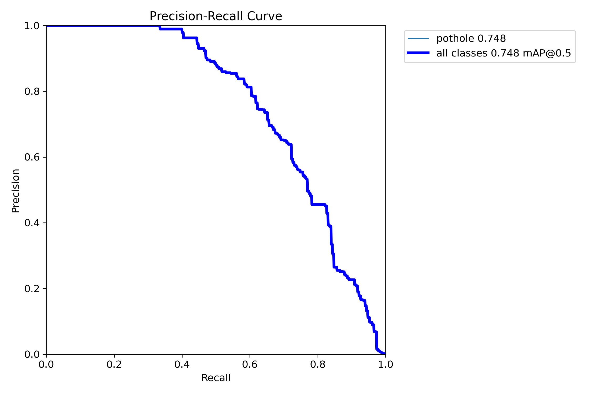
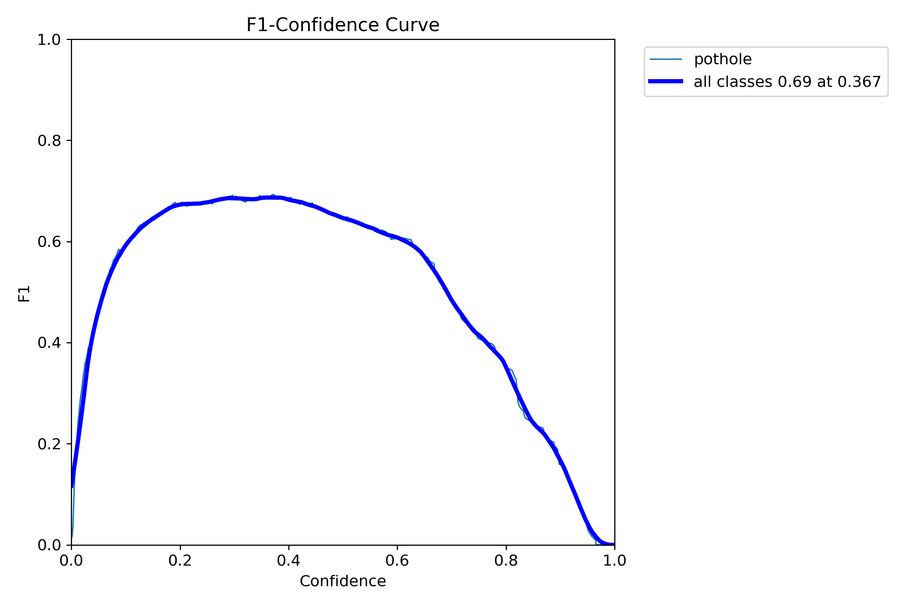
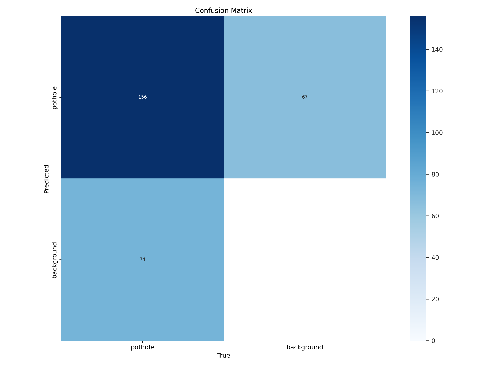
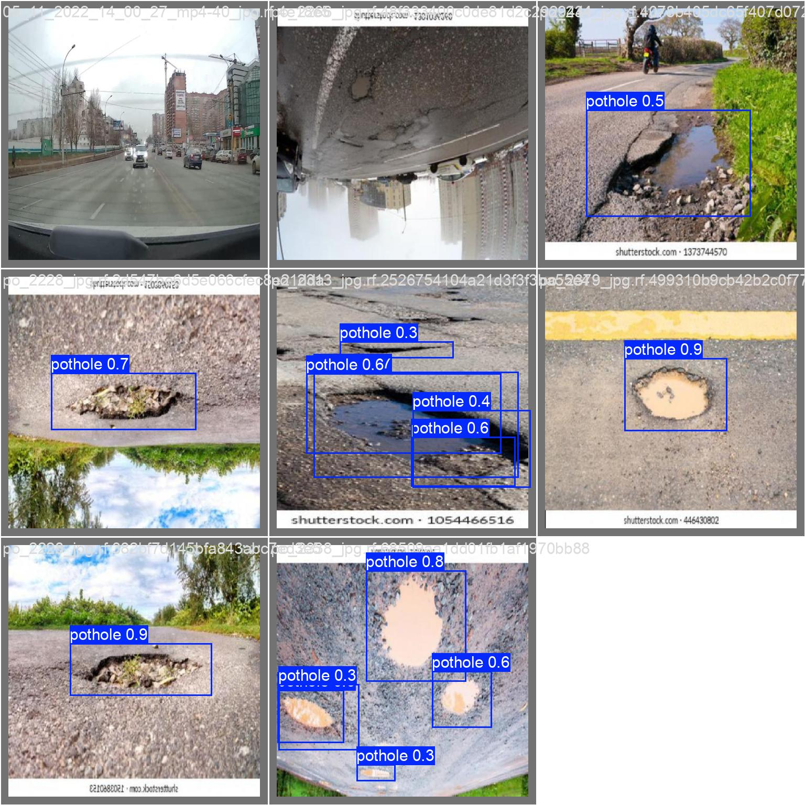

Stage 6 of the AI Barabara methodology · ARICS Prototype (v0.1)
Summary: This report details the initial training run of the ARICS road damage model. It demonstrates that the core architecture (YOLOv8-nano) can successfully detect potholes from street-level imagery. However, it also openly documents the constraints of this run: it was trained on a CPU-only machine, was limited to 8 epochs, and was scoped to a single defect class. These limitations directly inform our request for GPU compute and local Kenyan imagery.
The ARICS model was trained using Ultralytics YOLOv8-nano. The architecture was chosen specifically because it is the lightest variant, allowing for inference on standard laptops or mobile edge devices in the field.
| Hardware | CPU only (device: cpu). No GPU acceleration was available. Free-tier cloud GPU runs were terminated early due to time limits. |
| Duration | 8 epochs (early stopping triggered due to patience: 5 with no improvement). |
| Image Size / Batch | 480×480 / batch 4 (reduced to fit within CPU memory constraints). |
| Classes | 1 class: pothole. (The full 4-class RDD2022 benchmark was not used in this specific run due to compute limits). |
The Compute Barrier: The training script was configured for 8 epochs to establish a baseline. The loss curves (not shown here) were still descending when training halted. With sustained GPU access, we would train for 100+ epochs on the full 4-class dataset at 640×640 resolution. This 8-epoch CPU run is the mathematical floor of what this architecture can achieve, not the ceiling.
Despite the severe compute limitations, the model learned to identify potholes with a high degree of precision on the validation set.



The confusion matrix reveals an important characteristic: the model is conservative. It missed 67 potholes (roughly 30% of the validation set) but almost never flagged a piece of healthy road as a pothole.
This is exactly why the human-in-the-loop architecture of the ARICS dashboard is essential. A missed pothole is a safety risk, which is why we prioritise recall in production. But the model's high precision means that when it does flag a pothole, engineers can trust it enough to dispatch a repair crew without needing to manually verify every single detection.
A validation report that only shows successes is not a validation report. The grid below shows the model's outputs on a batch of validation images, including both strong detections and clear limitations.

This validation report is intentionally transparent about its limitations. A single-class, 8-epoch CPU model is not sufficient for national deployment. There are two specific bottlenecks we must address in Phase 1:
Training on CPU restricts us to nano-architectures and tiny image sizes (480×480). To accurately detect the fine hairline cracks that precede potholes, we need higher resolution (640×640 or 1024×1024) and larger models (YOLOv8-medium). We are seeking ECA support for sustained GPU access to complete a 100+ epoch training run.
The imagery in this validation set comes from open-source datasets (RDD2022), which includes images from Japan, Norway, and the Czech Republic. It contains zero images from Africa.
A pothole in Nairobi does not look like a pothole in Oslo. The asphalt mix, the tropical rainfall, the lighting, and the local maintenance history all create a domain shift. Our next step, enabled by the KURA Phase 1 partnership, is to fine-tune this baseline model on 40–50 km of Kenyan urban road imagery.
Once we have that local data, the 0.748 mAP50 you see here will be the starting point, not the final score.
lr0: 0.01, optimizer: auto, imgsz: 480, batch: 4. No test-set evaluation has been conducted yet; metrics shown are from the validation split.